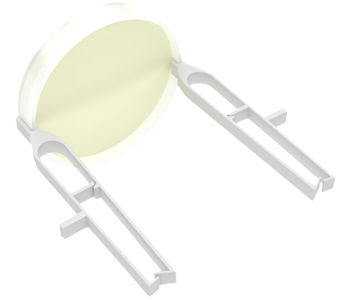

The future lies in our HVAC Monitoring & Surveillance System (HMSS). It's the answer to the pressing needs of healthcare facilities. It tackles challenges such as infection risks, inadequate basic care, and scarcity of intuitive, and efficient products. Through this system, we approach the problem at its source, aiming to create hospital environments that are more sanitary and conducive to health.
The onset of infection often leads to complex and incurable health issues or complications.
Our purpose and objective is to take on this task, laying down a future where patients experience an improved, more secure environment within a hospital facility.